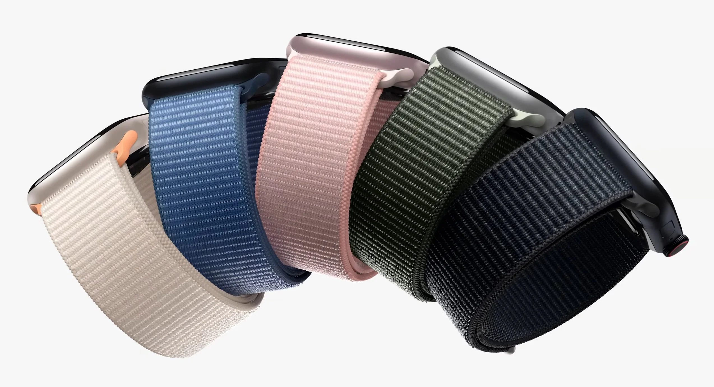

Більше ніякої шкіри
 Для захисту екології Apple більше не використовуватиме шкіру в нових продуктах, включаючи аксесуари для iPhone. Натомість компанія представляє нові чохли з новим матеріалом під назвою FineWoven. Цей матеріал складається на 68% з переробленого вмісту та має значно менші викиди вуглецю порівняно зі шкірою.